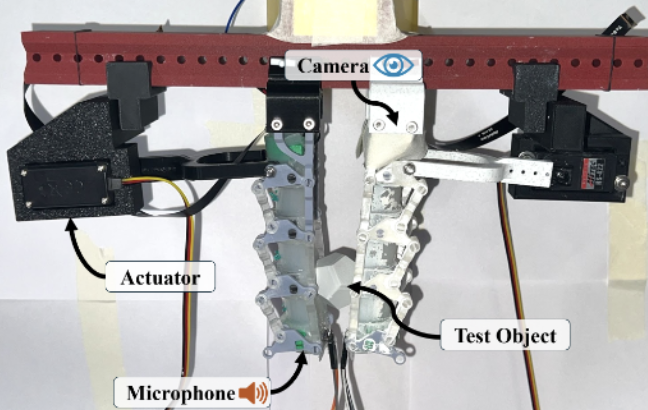
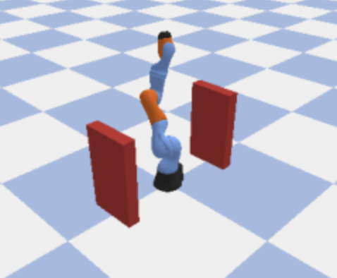
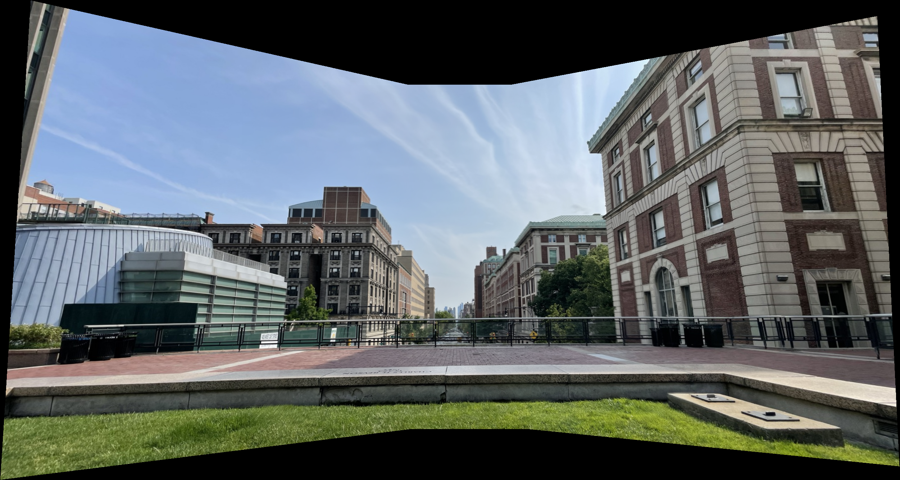

Work in multimodal robotic perception, motion planning, computer vision, and machine-learning data systems.

AI4CE Lab · 2025–2026
DeepCoFi
A multimodal proprioception framework using dual ResNet-18 encoders and a two-stage FoldingNet decoder to reconstruct soft-finger geometry and contact deformation as 2,025-point 3D surfaces.
Result: 1.51 mm Chamfer error and 47% lower contact error than a DeepSoRo-based baseline.

Python · PyBullet · 2026
Robot Arm Motion Planning
A 7-DOF manipulation simulation integrating forward kinematics, damped least-squares inverse kinematics, feedback control, and collision-aware configuration-space modeling.
Result: 98% collision-free planning success across 100 randomized start-goal queries.

Python · OpenCV · 2026
Geometric Visual Perception
A vision pipeline combining gradient-guided Hough voting, homography estimation, RANSAC outlier rejection, inverse perspective warping, and distance-weighted blending.
Applications include line and circular-object detection, multi-view alignment, and panoramic reconstruction.
An end-to-end pipeline for ingesting video and sensor streams, segmenting recordings into training samples, removing corrupted frames, and exporting sharded datasets.
Added dataset schemas and per-sample metadata for validation, traceability, and reproducible model training.